使用React开发时，需要配置非常困难的工具，这一点是臭名昭著的。如今，由于有了create-react-app，开始使用React开发几乎是无痛的。对于浏览器端JavaScript开发来说，可能从未出现过更好的开发工作流程。
我们不能永远依赖create-react-app的黑魔法，现在是时候让我们看看引擎盖下的东西了。使React应用发挥作用的关键因素之一是一个叫做webpack的工具。
Bundling
我们通过将代码分为独立的模块来实现我们的应用，这些模块被imported到需要它们的地方。尽管ECMAScript标准中定义了ES6模块，但老的浏览器实际上不知道如何处理被划分为模块的代码。
由于这个原因，分为模块的代码必须为浏览器进行捆绑，也就是说，所有的源代码文件都被转化为一个包含所有应用代码的文件。当我们在第三章节中把我们的React前端部署到生产中时，我们用_npm run build_命令进行了应用的捆绑。在引擎盖下，npm脚本使用webpack捆绑源代码，在build目录下产生以下文件集合。
.
├── asset-manifest.json
├── favicon.ico
├── index.html
├── logo192.png
├── logo512.png
├── manifest.json
├── robots.txt
└── static
├── css
│ ├── main.1becb9f2.css
│ └── main.1becb9f2.css.map
└── js
├── main.88d3369d.js
├── main.88d3369d.js.LICENSE.txt
└── main.88d3369d.js.map
位于构建目录根部的index.html文件是应用的 "主文件"，它用script标签加载捆绑的JavaScript文件。
<!doctype html>
<html lang="en">
<head>
<meta charset="utf-8"/>
<title>React App</title>
<script defer="defer" src="/static/js/main.88d3369d.js"></script>
<link href="/static/css/main.1becb9f2.css" rel="stylesheet">
</head>
<div id="root"></div>
</body>
</html>
正如我们从用create-react-app创建的应用的例子中可以看到，构建脚本也将应用的CSS文件捆绑到一个/static/css/main.1becb9f2.css文件中。
在实践中，捆绑是为了让我们为应用定义一个入口点，通常是index.js文件。当webpack捆绑代码时，它包括入口点导入的所有代码，以及其导入的代码，以此类推。
由于部分导入的文件是像React、Redux和Axios这样的包，捆绑的JavaScript文件也将包含这些库中的每一个内容。
将应用的代码分为多个文件的旧方法是基于这样的事实：index.html文件在脚本标签的帮助下加载应用的所有单独的JavaScript文件。这导致了性能的下降，因为每个独立文件的加载都会产生一些开销。出于这个原因，现在首选的方法是将代码捆绑在一个文件中。
接下来，我们将为一个React应用手工创建一个合适的webpack配置，从头开始。
让我们为项目创建一个新的目录，其中有以下子目录（build和src）和文件。
├── build
├── package.json
├── src
│ └── index.js
└── webpack.config.js
例如，package.json文件的内容可以是以下内容。
{
"name": "webpack-part7",
"version": "0.0.1",
"description": "practising webpack",
"scripts": {},
"license": "MIT"
}
让我们用命令来安装webpack。
npm install --save-dev webpack webpack-cli
我们在webpack.config.js文件中定义webpack的功能，我们用以下内容来初始化它。
const path = require('path')
const config = {
entry: './src/index.js',
output: {
path: path.resolve(__dirname, 'build'),
filename: 'main.js'
}
}
module.exports = config
然后我们将定义一个新的npm脚本，名为build，它将用webpack执行捆绑。
// ...
"scripts": {
"build": "webpack --mode=development"
},
// ...
让我们在src/index.js文件中再添加一些代码。
const hello = name => {
console.log(`hello ${name}`)
}
当我们执行_npm run build_命令时，我们的应用代码将被webpack捆绑。该操作将产生一个新的main.js文件，被添加到build目录下。
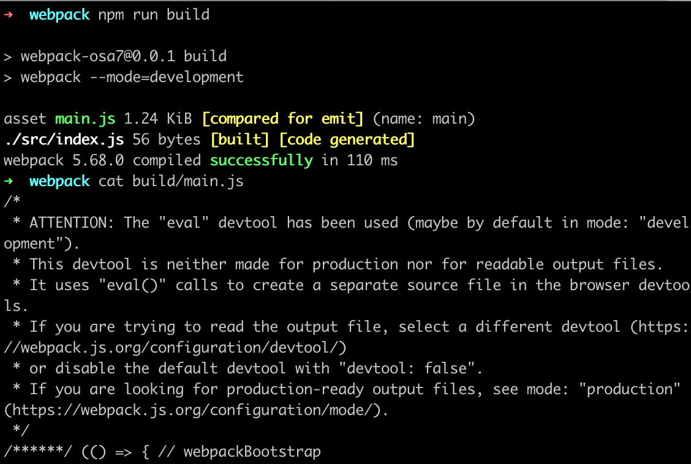
该文件包含了很多看起来相当有趣的东西。我们还可以在文件的末尾看到我们之前写的代码。
eval("const hello = name => {\n console.log(`hello ${name}`)\n}\n\n//# sourceURL=webpack://webpack-osa7/./src/index.js?");
我们在src目录下添加一个App.js文件，内容如下。
const App = () => {
return null
}
export default App
让我们在index.js文件中导入并使用App模块。
import App from './App';
const hello = name => {
console.log(`hello ${name}`)
}
App()
当我们用_npm run build_命令再次捆绑应用时，我们注意到webpack已经确认了这两个文件。
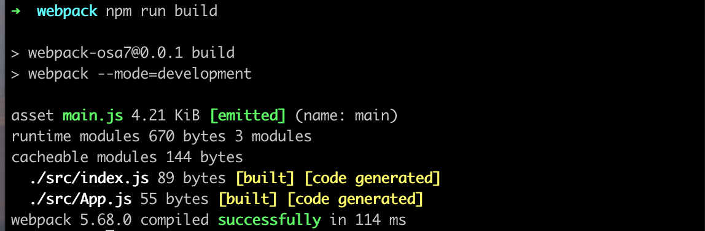
我们的应用代码可以在捆绑文件的末尾找到，格式相当隐晦。
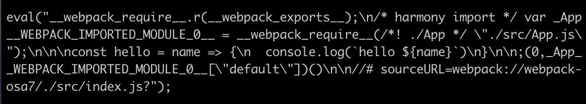
Configuration file
让我们仔细看看我们当前webpack.config.js文件的内容。
const path = require('path')
const config = {
entry: './src/index.js',
output: {
path: path.resolve(__dirname, 'build'),
filename: 'main.js'
}
}
module.exports = config
这个配置文件是用JavaScript写的，配置对象是用Node的模块语法导出的。
我们的最小配置定义几乎可以解释自己。配置对象的entry属性指定了将作为捆绑应用的入口点的文件。
output属性定义了捆绑后的代码将被存储在哪个位置。目标目录必须定义为一个绝对路径，这很容易用path.resolve方法创建。我们还使用\_dirname，这是Node中的一个全局变量，用于存储当前目录的路径。
Bundling React
接下来，让我们把我们的应用变成一个最小的React应用。让我们安装所需的库。
npm install react react-dom
然后让我们通过在index.js文件中添加熟悉的定义，将我们的应用变成一个React应用。
import React from 'react'
import ReactDOM from 'react-dom/client'
import App from './App'
ReactDOM.createRoot(document.getElementById('root')).render(<App />)
我们还将对App.js文件做如下修改。
import React from 'react' // we need this now also in component files
const App = () => {
return (
<div>
hello webpack
</div>
)
}
export default App
我们仍然需要build/index.html文件，它将作为我们应用的 "主页"，用script标签加载我们绑定的JavaScript代码。
<!DOCTYPE html>
<html lang="en">
<head>
<meta charset="utf-8" />
<title>React App</title>
</head>
<body>
<div id="root"></div>
<script type="text/javascript" src="./main.js"></script>
</body>
</html>
当我们捆绑我们的应用时，我们遇到了以下问题。
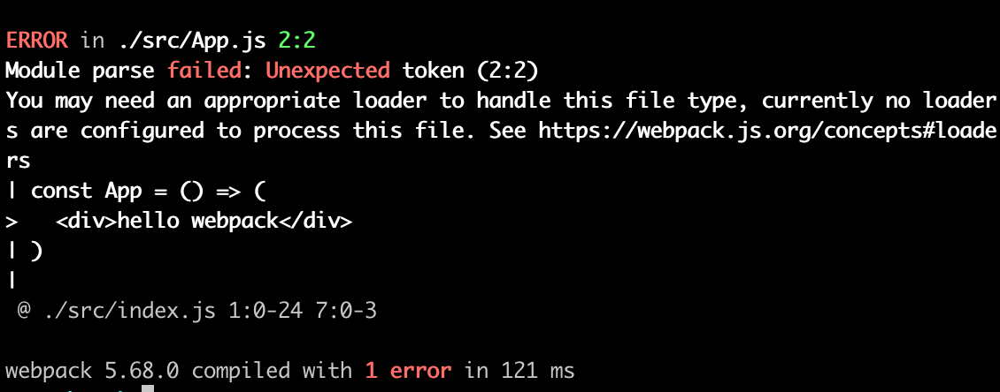
Loaders
来自webpack的错误信息指出，我们可能需要一个合适的加载器来正确捆绑App.js文件。默认情况下，webpack只知道如何处理普通的JavaScript。虽然我们可能已经不知道，但实际上我们是在使用JXX来渲染我们在React中的视图。为了说明这一点，下面的代码不是普通的JavaScript。
const App = () => {
return (
<div>
hello webpack
</div>
)
}
上面使用的语法来自JSX，它为我们提供了一种替代的方式来为html div标签定义React元素。
我们可以使用loaders来通知webpack在捆绑前需要处理的文件。
让我们为我们的应用配置一个加载器，将JXX代码转化为普通的JavaScript。
const config = {
entry: './src/index.js',
output: {
path: path.resolve(__dirname, 'build'),
filename: 'main.js',
},
// highlight-start
module: {
rules: [
{
test: /\.js$/,
loader: 'babel-loader',
options: {
presets: ['@babel/preset-react'],
},
},
],
},
// highlight-end
}
加载器被定义在module数组的rules属性下。
单个加载器的定义由三部分组成。
{
test: /\.js$/,
loader: 'babel-loader',
options: {
presets: ['@babel/preset-react']
}
}
test 属性指定加载器用于名称以.js结尾的文件。loader属性指定这些文件的处理将由babel-loader完成。options属性用于为加载器指定参数，配置其功能。
让我们把加载器和它所需的包作为开发依赖项来安装。
npm install @babel/core babel-loader @babel/preset-react --save-dev
捆绑应用现在将成功。
如果我们对App组件做一些修改，并看一下捆绑的代码，我们注意到该组件的捆绑版本是这样的。
const App = () =>
react__WEBPACK_IMPORTED_MODULE_0___default.a.createElement(
'div',
null,
'hello webpack'
)
从上面的例子中我们可以看到，原来用JSX编写的React元素现在通过使用React's createElement函数用普通的JavaScript创建。
你可以用浏览器的open file功能打开build/index.html文件来测试绑定的应用。
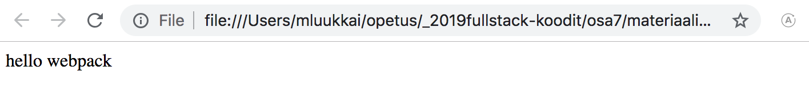
值得注意的是，如果捆绑的应用的源代码使用了async/await，浏览器在某些浏览器上将不会渲染任何东西。在控制台中搜索错误信息会对这个问题有所了解。随着先前的解决方案被废弃，我们现在必须再安装两个缺失的依赖，即core-js和regenerator-runtime。
npm install core-js regenerator-runtime
你需要在index.js文件的顶部导入这些依赖项。
import 'core-js/stable/index.js'
import 'regenerator-runtime/runtime.js'
我们的配置几乎包含了React开发所需的一切。
Transpilers
将代码从一种形式的JavaScript转换为另一种形式的过程被称为转译。这个术语的一般定义是通过将源代码从一种语言转换为另一种语言来进行编译。
通过使用上一节的配置，我们在babel的帮助下，将包含JSX的代码转译成普通的JavaScript，这是目前最流行的工作工具。
如第一章节所述，大多数浏览器不支持ES6和ES7中引入的最新特性，为此，代码通常被转译为实现ES5标准的JavaScript版本。
由Babel执行的转置过程是用插件定义的。在实践中，大多数开发者使用现成的预设，它们是预先配置的插件组。
目前我们使用@babel/preset-react预设来转录我们应用的源代码。
{
test: /\.js$/,
loader: 'babel-loader',
options: {
presets: ['@babel/preset-react'] // highlight-line
}
}
让我们添加@babel/preset-env插件，它包含了使用所有最新特性的代码并将其转译为与ES5标准兼容的代码所需的一切。
{
test: /\.js$/,
loader: 'babel-loader',
options: {
presets: ['@babel/preset-env', '@babel/preset-react'] // highlight-line
}
}
让我们用命令来安装这个预设。
npm install @babel/preset-env --save-dev
当我们转译代码时，它被转化为老式的JavaScript。转换后的App组件的定义看起来是这样的。
var App = function App() {
return _react2.default.createElement('div', null, 'hello webpack')
};
我们可以看到，变量是用_var_关键字声明的，因为ES5的JavaScript不理解_const_关键字。箭头函数也没有使用，这就是为什么函数定义使用_function_关键字的原因。
CSS
让我们为我们的应用添加一些CSS。让我们创建一个新的src/index.css文件。
.container {
margin: 10;
background-color: #dee8e4;
}
然后让我们在App组件中使用这个样式。
const App = () => {
return (
<div className="container">
hello webpack
</div>
)
}
我们在index.js文件中导入该样式。
import './index.css'
这将导致转译过程的中断。
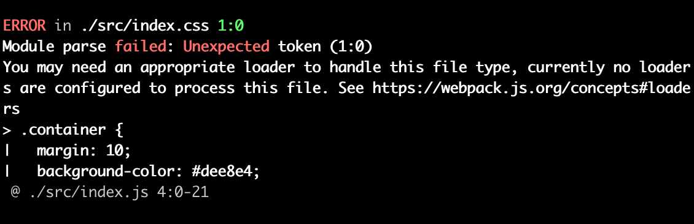
{
rules: [
{
test: /\.js$/,
loader: 'babel-loader',
options: {
presets: ['@babel/preset-react', '@babel/preset-env'],
},
},
// highlight-start
{
test: /\.css$/,
use: ['style-loader', 'css-loader'],
},
// highlight-end
];
}
css加载器的工作是加载CSS文件，style加载器的工作是生成并注入一个style元素，其中包含应用的所有样式。
通过这种配置，CSS定义被包含在应用的main.js文件中。由于这个原因，不需要在应用的主index.html文件中单独导入CSS样式。
如果需要，应用的CSS也可以通过使用mini-css-extract-plugin生成它自己的独立文件。
当我们安装加载器时。
npm install style-loader css-loader --save-dev
捆绑将再次成功，应用获得新的样式。
Webpack-dev-server
目前的配置使我们有可能开发我们的应用，但工作流程很糟糕（到了类似于用Java开发工作流程的地步）。每当我们对代码进行修改时，我们必须将其捆绑并刷新浏览器，以便测试代码。
webpack-dev-server为我们的问题提供了一个解决方案。让我们用命令来安装它。
npm install --save-dev webpack-dev-server
让我们定义一个npm脚本来启动dev-server。
{
// ...
"scripts": {
"build": "webpack --mode=development",
"start": "webpack serve --mode=development" // highlight-line
},
// ...
}
让我们在webpack.config.js文件中的配置对象中添加一个新的devServer属性。
const config = {
entry: './src/index.js',
output: {
path: path.resolve(__dirname, 'build'),
filename: 'main.js',
},
// highlight-start
devServer: {
static: path.resolve(__dirname, 'build'),
compress: true,
port: 3000,
},
// highlight-end
// ...
};
_npm start_命令现在将在3000端口启动dev-server，这意味着我们的应用将可以通过访问http://localhost:3000在浏览器中使用。当我们对代码进行修改时，浏览器会自动刷新页面。
更新代码的过程很迅速。当我们使用dev-server时，代码不会以通常的方式捆绑到main.js文件中。捆绑的结果只存在于内存中。
让我们通过改变App组件的定义来扩展代码，如下所示。
import React, { useState } from 'react'
import './index.css'
const App = () => {
const [counter, setCounter] = useState(0)
return (
<div className="container">
hello webpack {counter} clicks
<button onClick={() => setCounter(counter + 1)}>
press
</button>
</div>
)
}
export default App
应用工作得很好，开发工作流程也相当顺利。
Source maps
让我们把点击处理程序提取到它自己的函数中，并把计数器的前值存储到它自己的values状态中。
const App = () => {
const [counter, setCounter] = useState(0)
const [values, setValues] = useState() // highlight-line
const handleClick = () => {
setCounter(counter + 1)
setValues(values.concat(counter)) // highlight-line
}
return (
<div className="container">
hello webpack {counter} clicks
<button onClick={handleClick}> // highlight-line
press
</button>
</div>
)
}
应用不再工作了，控制台将显示以下错误。
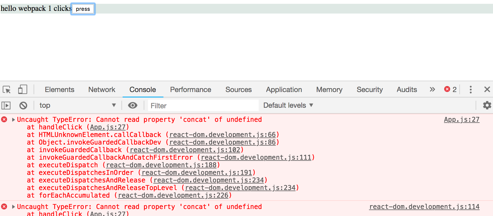
我们知道错误在onClick方法中，但如果应用再大一点，错误信息就很难追踪了。
App.js:27 Uncaught TypeError: Cannot read property 'concat' of undefined
at handleClick (App.js:27)
消息中指出的错误位置与我们源代码中的实际位置不一致。如果我们点击错误信息，我们注意到显示的源代码与我们的应用代码不一样。
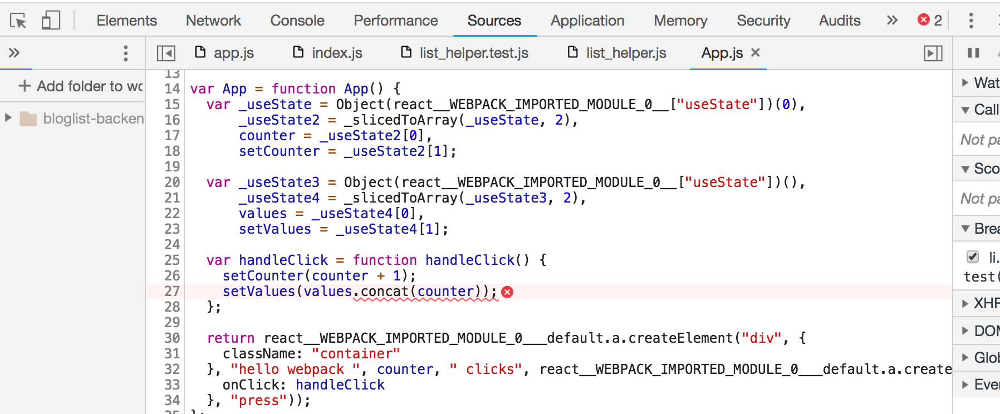
当然，我们希望在错误信息中看到我们的实际源代码。
幸运的是，在这方面修复错误信息是很容易的。我们将要求webpack为bundle生成一个所谓的source map，这使得我们有可能将bundle执行过程中出现的错误映射到原始源代码中的相应部分。
源码图可以通过在配置对象中添加一个新的devtool属性来生成，其值为"source-map"。
const config = {
entry: './src/index.js',
output: {
// ...
},
devServer: {
// ...
},
devtool: 'source-map', // highlight-line
// ..
};
当我们对Webpack的配置进行修改时，必须重新启动它。也可以让webpack观察对它的改动，但这次我们不会这么做。
现在的错误信息好了很多
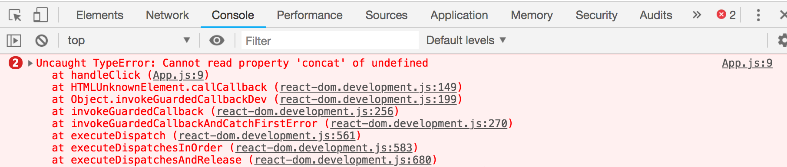
因为它指的是我们写的代码。
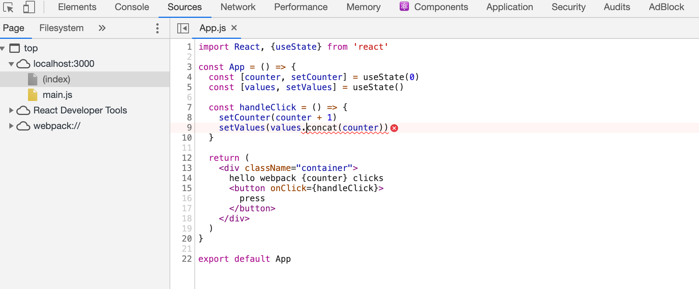
生成源码图也使我们有可能使用Chrome调试器。
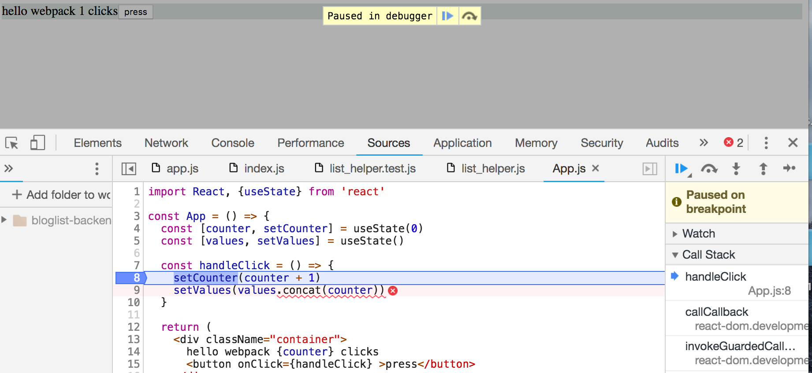
让我们通过将values的状态初始化为一个空数组来修复这个错误。
const App = () => {
const [counter, setCounter] = useState(0)
const [values, setValues] = useState([])
// ...
}
Minifying the code
当我们将应用部署到生产中时，我们使用的是由webpack生成的main.js代码包。main.js文件的大小为1356668字节，尽管我们的应用只包含几行我们自己的代码。文件大小较大的原因是，该捆绑文件还包含整个React库的源代码。捆绑代码的大小很重要，因为浏览器在第一次使用应用时必须加载这些代码。在高速网络连接下，1356668字节不是问题，但如果我们继续添加更多的外部依赖，加载速度可能会成为一个问题，特别是对于移动用户。
如果我们检查捆绑文件的内容，我们注意到它可以通过删除所有的注释来大大优化文件大小。手动优化这些文件是没有意义的，因为有很多现有的工具可以完成这项工作。
JavaScript文件的优化过程被称为minification。其中一个用于此目的的主要工具是UglifyJS。
从webpack的第4版开始，minification插件不需要额外的配置就可以使用。只要修改package.json文件中的npm脚本，指定webpack在production模式下执行代码的捆绑即可。
{
"name": "webpack-part7",
"version": "0.0.1",
"description": "practising webpack",
"scripts": {
"build": "webpack --mode=production", // highlight-line
"start": "webpack serve --mode=development"
},
"license": "MIT",
"dependencies": {
// ...
},
"devDependencies": {
// ...
}
}
当我们再次捆绑应用时，产生的main.js的大小大幅减少。
$ ls -l build/main.js
-rw-r--r-- 1 mluukkai ATKK\hyad-all 227651 Feb 7 15:58 build/main.js
最小化过程的输出类似于老式的C代码；所有的注释，甚至不必要的空白和换行符都被删除了，变量名也被替换成了一个字符。
function h(){if(!d){var e=u(p);d=!0;for(var t=c.length;t;){for(s=c,c=[];++f<t;)s&&s[f].run();f=-1,t=c.length}s=null,d=!1,function(e){if(o===clearTimeout)return clearTimeout(e);if((o===l||!o)&&clearTimeout)return o=clearTimeout,clearTimeout(e);try{o(e)}catch(t){try{return o.call(null,e)}catch(t){return o.call(this,e)}}}(e)}}a.nextTick=function(e){var t=new Array(arguments.length-1);if(arguments.length>1)
Development and production configuration
接下来，让我们通过重新利用现在熟悉的笔记应用的后端，为我们的应用添加一个后端。
让我们在db.json文件中存储以下内容。
{
"notes": [
{
"important": true,
"content": "HTML is easy",
"id": "5a3b8481bb01f9cb00ccb4a9"
},
{
"important": false,
"content": "Mongo can save js objects",
"id": "5a3b920a61e8c8d3f484bdd0"
}
]
}
我们的目标是用webpack配置应用，使其在本地使用时，使用3001端口的json-server作为其后端。
然后，捆绑的文件将被配置为使用https://obscure-harbor-49797.herokuapp.com/api/notes网址上的后端。
我们将安装axios，启动json-server，然后对应用进行必要的修改。为了改变现状，我们将用我们的自定义钩子从后端获取笔记，称为_useNotes_。
import React, { useState, useEffect } from 'react'
import axios from 'axios'
// highlight-start
const useNotes = (url) => {
const [notes, setNotes] = useState([])
useEffect(() => {
axios.get(url).then(response => {
setNotes(response.data)
})
}, [url])
return notes
}
// highlight-end
const App = () => {
const [counter, setCounter] = useState(0)
const [values, setValues] = useState([])
const url = 'https://obscure-harbor-49797.herokuapp.com/api/notes'
const notes = useNotes(url) // highlight-line
const handleClick = () => {
setCounter(counter + 1)
setValues(values.concat(counter))
}
return (
<div className="container">
hello webpack {counter} clicks
<button onClick={handleClick} >press</button>
<div>{notes.length} notes on server {url}</div> // highlight-line
</div>
)
}
export default App
后端服务器的地址目前在应用代码中是硬编码的。当代码被捆绑到生产中时，我们如何以一种可控的方式改变地址以指向生产用的后端服务器？
让我们把webpack.config.js文件中的配置对象改成一个函数而不是一个对象。
const path = require('path');
const config = (env, argv) => {
return {
entry: './src/index.js',
output: {
// ...
},
devServer: {
// ...
},
devtool: 'source-map',
module: {
// ...
},
plugins: [
// ...
],
}
}
module.exports = config
除了配置对象现在由函数返回之外，定义几乎完全相同。该函数接收两个参数，env和argv，其中第二个参数可用于访问npm脚本中定义的mode。
我们也可以使用webpack的DefinePlugin来定义全局默认常量，可以在捆绑的代码中使用。让我们定义一个新的全局常量BACKEND_URL，根据代码被捆绑的环境，获得不同的值。
const path = require('path')
const webpack = require('webpack') // highlight-line
const config = (env, argv) => {
console.log('argv', argv.mode)
// highlight-start
const backend_url = argv.mode === 'production'
? 'https://obscure-harbor-49797.herokuapp.com/api/notes'
: 'http://localhost:3001/notes'
// highlight-end
return {
entry: './src/index.js',
output: {
path: path.resolve(__dirname, 'build'),
filename: 'main.js'
},
devServer: {
static: path.resolve(__dirname, 'build'),
compress: true,
port: 3000,
},
devtool: 'source-map',
module: {
// ...
},
// highlight-start
plugins: [
new webpack.DefinePlugin({
BACKEND_URL: JSON.stringify(backend_url)
})
]
// highlight-end
}
}
module.exports = config
这个全局常量在代码中以下列方式使用。
const App = () => {
const [counter, setCounter] = useState(0)
const [values, setValues] = useState([])
const notes = useNotes(BACKEND_URL) // highlight-line
// ...
return (
<div className="container">
hello webpack {counter} clicks
<button onClick={handleClick} >press</button>
<div>{notes.length} notes on server {BACKEND_URL}</div> // highlight-line
</div>
)
}
如果开发和生产的配置差别很大，把两者的配置分开到各自的文件中可能是个好主意。
我们可以通过在build目录下执行以下命令来检查本地捆绑的生产版本的应用。
npx static-server
默认情况下，捆绑的应用将在http://localhost:9080上提供。
Polyfill
我们的应用已经完成，可以在所有相对较新版本的现代浏览器中使用，但Internet Explorer除外。原因是，由于_axios_，我们的代码使用了 promise ，而现有版本的IE都不支持。
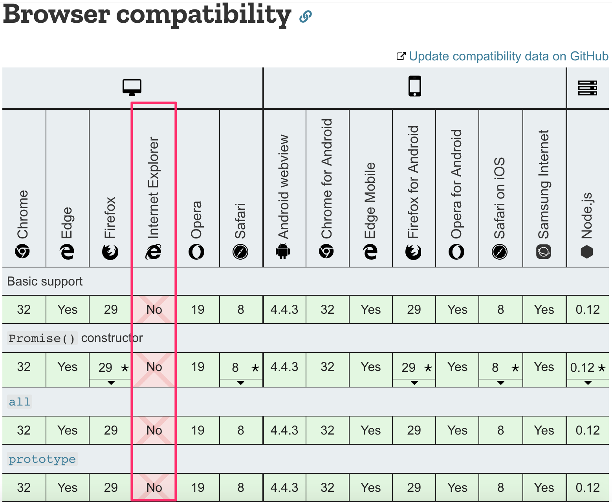
标准中还有很多东西是IE不支持的。像JavaScript数组的find方法这样无害的东西超过了IE的能力。
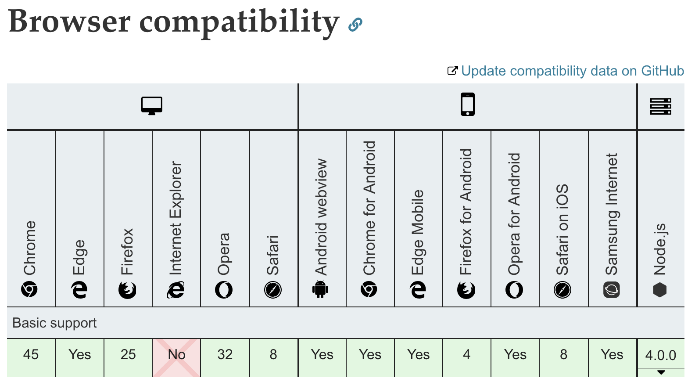
在这些情况下，仅仅转译代码是不够的，因为转译只是把代码从较新的JavaScript版本转到较旧的浏览器支持的版本上。IE在语法上理解 promise ，但它根本没有实现其功能。在IE中，数组的_find_属性是简单的undefined。
如果我们想让应用与IE兼容，我们需要添加一个polyfill，它是为旧版浏览器添加缺失功能的代码。
Polyfills可以在webpack和Babel的帮助下添加，或者通过安装许多现有的polyfill库中的一个。
由promise-polyfill库提供的polyfill很容易使用。我们只需将以下内容添加到我们现有的应用代码中。
import PromisePolyfill from 'promise-polyfill'
if (!window.Promise) {
window.Promise = PromisePolyfill
}
如果全局的_Promise_对象不存在，也就是说浏览器不支持Promise，那么polyfilled Promise就会存储在全局变量中。如果polyfilled Promise实现得足够好，那么代码的其他部分应该可以顺利工作。
现有polyfills的详尽列表可以在这里找到。
不同API的浏览器兼容性可以通过访问https://caniuse.com或Mozilla's website来检查。
Eject
create-react-app工具在幕后使用webpack。如果默认配置不够，可以eject项目，这将摆脱所有的黑魔法，默认的配置文件将存储在config目录和修改后的package.json文件中。
如果你弹出一个用create-react-app创建的应用，则没有任何回报，所有的配置将不得不手动维护。默认的配置并不简单，与其从create-react-app应用中弹出，不如从一开始就编写你自己的webpack配置。
仔细阅读一个被弹出的应用的配置文件仍然是值得推荐的，而且非常有教育意义。